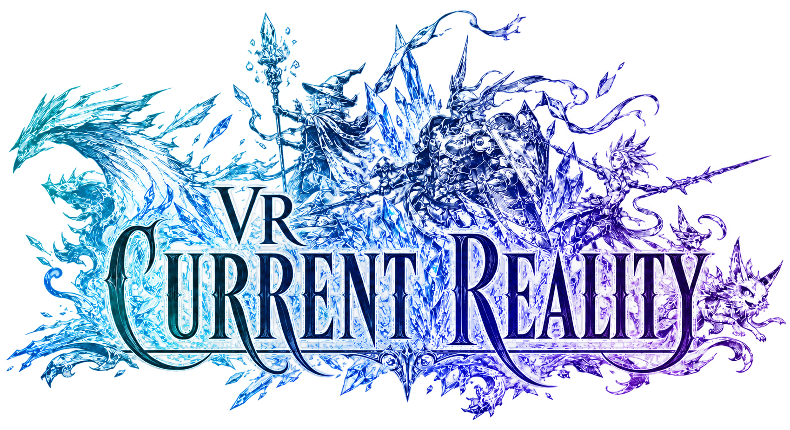

Pick a role
Damage, defense, healing, support, or pet control. Choose what sounds fun before chasing a perfect build.

One world · a different reality
The living companion for FFXI VR: Current Reality—jobs, macros, items, spells, weapon skills, skillchains, quests, missions, and server-aligned Vana’diel time.
Compendium · Version IV
ElementNext day in --:--
New adventurer route
Damage, defense, healing, support, or pet control. Choose what sounds fun before chasing a perfect build.
Begin with targeting, one core ability, one emergency action, and your most-used spells or pet commands.
Weapon and magic skills matter. Fight appropriate enemies and keep your primary tools near their current cap.
Nation missions provide the clearest early progression. Side quests can be layered in as you explore.
Searchable command builder
<t>current target<me>your character<stpc>select a player<stnpc>select an enemy<stal>alliance memberComplete server job dossiers
Loading server job records…
Ability fundamentals
Use /ja "Ability" <target>. Most self-enhancements use <me>; hostile abilities usually use <t>.
Use /ma "Spell" <target>. Sub-targets such as <stpc> let healers choose a player without changing their locked target.
Use /pet "Command" <target>. Summoner Assault, Beastmaster Fight, and Puppetmaster Deploy all send a companion into battle.
Use /ws "Weapon Skill" <t> at sufficient TP. Coordinate skillchain properties rather than firing every weapon skill immediately.
/ra <t> starts a ranged attack. Distance, ammunition, ranged skill, and enemy movement affect the result.
Powerful long-recast abilities can rescue a difficult pull. Keep them on a deliberate macro page rather than beside routine actions.
Weapon field notes
Fast multi-hit pressure and steady TP flow.
Quick attacks, positional play, and utility weapon skills.
Balanced offense with broad defensive and magical job support.
Heavy single hits and strong offensive weapon skills.
Reliable physical damage and defense-down options.
Slow, powerful strikes with drain-oriented weapon skills.
Excellent reach, piercing damage, and jump synergy.
Fast dual-wield flow paired with ninjutsu.
TP control and flexible skillchain building.
Magic-focused stats with blunt damage when needed.
Distance management, ammunition, and ranged accuracy.
Training rule: equip the weapon you intend to use before a long leveling session. Skill gaps become much harder to repair later.
Complete server database
Loading: preparing the complete server-matched reference.
Text-based equipment planner
The planner is an original milestone guide inspired by the comparison approach used by Claquesous Equipment. Availability and augments can differ by server.
Complete recipe workshop
How to use the route: synth a few levels below the cap while success is reliable, then move forward as gains slow. Guild rank tests are separate from Guild Point contracts; Guild Points begin at Novice after the contract is signed.
Interactive skillchain planner
Select the property created by the first weapon skill. The planner highlights valid follow-up properties and the resulting skillchain.
Fisher’s field journal
Fisherman’s gear adds fishing skill. A Halcyon Rod is a practical early choice; Lu Shang’s and Ebisu become long-term goals.
Freshwater and saltwater pools contain different fish. Rod strength, bait type, fish size, and target skill all affect the result.
Small fish, large fish, items, and monsters announce themselves differently. Empty the catch’s stamina before attempting to reel it in.
Full and new moons shorten bite time; quarter moons are slower. Use /clock on in game to check the current phase.
Fishing route references: BlueGartr Fishing Guide 1–100 · BG-Wiki Community Fishing Guide. Server-specific pools and bite behavior can differ.
Vana’diel elemental calendar
Live guidance: the hero clock highlights the current element, moon phase, and exact Earth-time countdown to the next day. Regional clouds and storms are separate zone weather and are not inferred from the weekday.
Quest compass
Check gates, shops, guilds, and residential districts. Early quests teach the geography and unlock useful conveniences.
Keep common drops until you know their quest and crafting value. Inventory planning is part of classic FFXI progression.
Repeatable quests can raise fame and unlock deeper stories, but nation missions remain the primary spine.
Mission roadmap
Learn the nearby regions, beastmen, and gate-guard mission flow.
The world opens as national stories begin to intersect.
Prepare for longer travel, dangerous dungeons, and coordinated fights.
Nation leadership stories deepen and broader expansion paths await.
This is the light roadmap. Detailed mission pages, prerequisites, NPC locations, and server-specific notes are planned for Field Manual II.